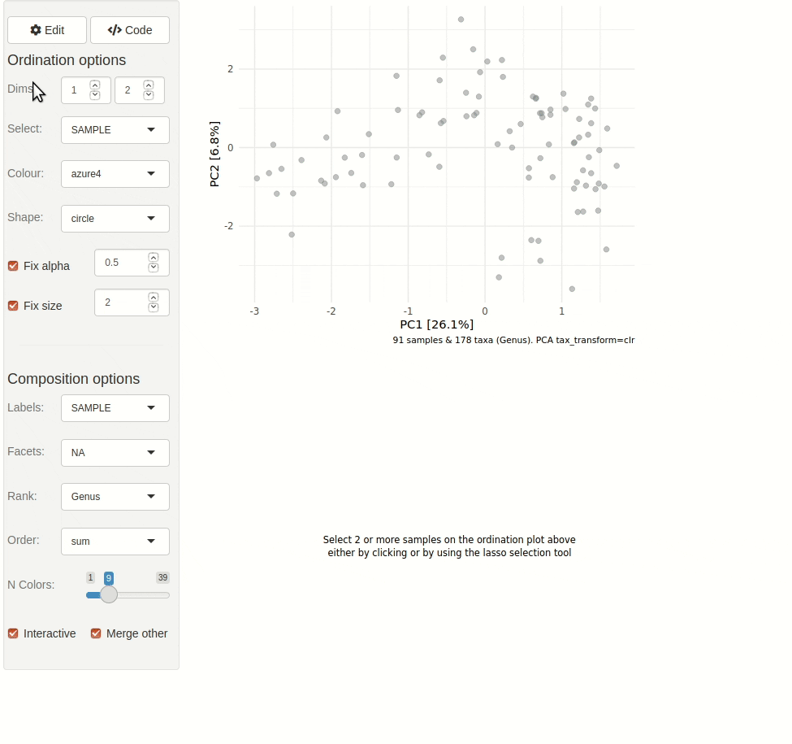

Interactive Ordination Plot
Source:vignettes/web-only/ordination-interactive.Rmd
ordination-interactive.RmdThis article shows you how to quickly get started with interactive exploration of your data/ ordination plot.
library(phyloseq)
library(microViz)
#> microViz version 0.12.2 - Copyright (C) 2021-2024 David Barnett
#> ! Website: https://david-barnett.github.io/microViz
#> ✔ Useful? For citation details, run: `citation("microViz")`
#> ✖ Silence? `suppressPackageStartupMessages(library(microViz))`Example
Example data loaded from the corncob package. All you need is a valid
phyloseq object, and to run tax_fix to ensure
the tax_table doesn’t contain problematic names.
pseq <- microViz::ibd %>%
tax_fix() %>%
phyloseq_validate()The gif animation below shows the result of running
ord_explore, the animation starts immediately after
interactively selecting “Genus” level aggregation, “clr” transformation,
and the “PCA” ordination method from the “Edit” menu.

Another (old) example
Get example dataset from the phyloseq package and clean up the taxa just a little.
data("enterotype", package = "phyloseq")
taxa_names(enterotype)[1] <- "Unclassified" # replace strange "-1" name
ps <- tax_fix(enterotype) # remove NA taxa and similar
#> Row named: Unclassified
#> contains no non-unknown values, returning:
#> 'Unclassified' for all replaced levels.
#> Consider editing this tax_table entry manually.
#> Row named: Bacteria
#> contains no non-unknown values, returning:
#> 'Bacteria' for all replaced levels.
#> Consider editing this tax_table entry manually.Create simple Bray-Curtis PCoA to explore interactively.
ord1 <- ps %>%
tax_transform("identity", rank = "Genus") %>%
dist_calc("bray") %>% # bray curtis
ord_calc() # automagically picks PCoA
#> Warning: otu_table of counts is NOT available!
#> Available otu_table contains 50166 values that are not non-negative integersStart interactive Shiny app. Note that the gif animation shown is
from an outdated version of microViz. More recent versions of
ord_explore allow editing the ordination shown, and
generating ord_plot code.
ord_explore(data = ord1, auto_caption = NA)
Session info
devtools::session_info()
#> ─ Session info ───────────────────────────────────────────────────────────────
#> setting value
#> version R version 4.4.0 (2024-04-24)
#> os Ubuntu 22.04.4 LTS
#> system x86_64, linux-gnu
#> ui X11
#> language en
#> collate C.UTF-8
#> ctype C.UTF-8
#> tz UTC
#> date 2024-06-05
#> pandoc 3.1.11 @ /opt/hostedtoolcache/pandoc/3.1.11/x64/ (via rmarkdown)
#>
#> ─ Packages ───────────────────────────────────────────────────────────────────
#> package * version date (UTC) lib source
#> ade4 1.7-22 2023-02-06 [1] RSPM
#> ape 5.8 2024-04-11 [1] RSPM
#> Biobase 2.64.0 2024-04-30 [1] Bioconduc~
#> BiocGenerics 0.50.0 2024-04-30 [1] Bioconduc~
#> biomformat 1.32.0 2024-04-30 [1] Bioconduc~
#> Biostrings 2.72.1 2024-06-02 [1] Bioconduc~
#> bslib 0.7.0 2024-03-29 [1] RSPM
#> cachem 1.1.0 2024-05-16 [1] RSPM
#> cli 3.6.2 2023-12-11 [1] RSPM
#> cluster 2.1.6 2023-12-01 [3] CRAN (R 4.4.0)
#> codetools 0.2-20 2024-03-31 [3] CRAN (R 4.4.0)
#> colorspace 2.1-0 2023-01-23 [1] RSPM
#> crayon 1.5.2 2022-09-29 [1] RSPM
#> data.table 1.15.4 2024-03-30 [1] RSPM
#> desc 1.4.3 2023-12-10 [1] RSPM
#> devtools 2.4.5 2022-10-11 [1] RSPM
#> digest 0.6.35 2024-03-11 [1] RSPM
#> dplyr 1.1.4 2023-11-17 [1] RSPM
#> ellipsis 0.3.2 2021-04-29 [1] RSPM
#> evaluate 0.23 2023-11-01 [1] RSPM
#> fansi 1.0.6 2023-12-08 [1] RSPM
#> fastmap 1.2.0 2024-05-15 [1] RSPM
#> foreach 1.5.2 2022-02-02 [1] RSPM
#> fs 1.6.4 2024-04-25 [1] RSPM
#> generics 0.1.3 2022-07-05 [1] RSPM
#> GenomeInfoDb 1.40.1 2024-05-24 [1] Bioconduc~
#> GenomeInfoDbData 1.2.12 2024-06-05 [1] Bioconductor
#> ggplot2 3.5.1 2024-04-23 [1] RSPM
#> glue 1.7.0 2024-01-09 [1] RSPM
#> gtable 0.3.5 2024-04-22 [1] RSPM
#> htmltools 0.5.8.1 2024-04-04 [1] RSPM
#> htmlwidgets 1.6.4 2023-12-06 [1] RSPM
#> httpuv 1.6.15 2024-03-26 [1] RSPM
#> httr 1.4.7 2023-08-15 [1] RSPM
#> igraph 2.0.3 2024-03-13 [1] RSPM
#> IRanges 2.38.0 2024-04-30 [1] Bioconduc~
#> iterators 1.0.14 2022-02-05 [1] RSPM
#> jquerylib 0.1.4 2021-04-26 [1] RSPM
#> jsonlite 1.8.8 2023-12-04 [1] RSPM
#> knitr 1.47 2024-05-29 [1] RSPM
#> later 1.3.2 2023-12-06 [1] RSPM
#> lattice 0.22-6 2024-03-20 [3] CRAN (R 4.4.0)
#> lifecycle 1.0.4 2023-11-07 [1] RSPM
#> magrittr 2.0.3 2022-03-30 [1] RSPM
#> MASS 7.3-60.2 2024-05-25 [3] local
#> Matrix 1.7-0 2024-03-22 [3] CRAN (R 4.4.0)
#> memoise 2.0.1 2021-11-26 [1] RSPM
#> mgcv 1.9-1 2023-12-21 [3] CRAN (R 4.4.0)
#> microbiome 1.26.0 2024-04-30 [1] Bioconduc~
#> microViz * 0.12.2 2024-06-05 [1] local
#> mime 0.12 2021-09-28 [1] RSPM
#> miniUI 0.1.1.1 2018-05-18 [1] RSPM
#> multtest 2.60.0 2024-04-30 [1] Bioconduc~
#> munsell 0.5.1 2024-04-01 [1] RSPM
#> nlme 3.1-164 2023-11-27 [3] CRAN (R 4.4.0)
#> permute 0.9-7 2022-01-27 [1] RSPM
#> phyloseq * 1.48.0 2024-04-30 [1] Bioconduc~
#> pillar 1.9.0 2023-03-22 [1] RSPM
#> pkgbuild 1.4.4 2024-03-17 [1] RSPM
#> pkgconfig 2.0.3 2019-09-22 [1] RSPM
#> pkgdown 2.0.9 2024-04-18 [1] RSPM
#> pkgload 1.3.4 2024-01-16 [1] RSPM
#> plyr 1.8.9 2023-10-02 [1] RSPM
#> profvis 0.3.8 2023-05-02 [1] RSPM
#> promises 1.3.0 2024-04-05 [1] RSPM
#> purrr 1.0.2 2023-08-10 [1] RSPM
#> R6 2.5.1 2021-08-19 [1] RSPM
#> ragg 1.3.2 2024-05-15 [1] RSPM
#> Rcpp 1.0.12 2024-01-09 [1] RSPM
#> remotes 2.5.0 2024-03-17 [1] RSPM
#> reshape2 1.4.4 2020-04-09 [1] RSPM
#> rhdf5 2.48.0 2024-04-30 [1] Bioconduc~
#> rhdf5filters 1.16.0 2024-04-30 [1] Bioconduc~
#> Rhdf5lib 1.26.0 2024-04-30 [1] Bioconduc~
#> rlang 1.1.3 2024-01-10 [1] RSPM
#> rmarkdown 2.27 2024-05-17 [1] RSPM
#> Rtsne 0.17 2023-12-07 [1] RSPM
#> S4Vectors 0.42.0 2024-04-30 [1] Bioconduc~
#> sass 0.4.9 2024-03-15 [1] RSPM
#> scales 1.3.0 2023-11-28 [1] RSPM
#> sessioninfo 1.2.2 2021-12-06 [1] RSPM
#> shiny 1.8.1.1 2024-04-02 [1] RSPM
#> stringi 1.8.4 2024-05-06 [1] RSPM
#> stringr 1.5.1 2023-11-14 [1] RSPM
#> survival 3.5-8 2024-02-14 [3] CRAN (R 4.4.0)
#> systemfonts 1.1.0 2024-05-15 [1] RSPM
#> textshaping 0.4.0 2024-05-24 [1] RSPM
#> tibble 3.2.1 2023-03-20 [1] RSPM
#> tidyr 1.3.1 2024-01-24 [1] RSPM
#> tidyselect 1.2.1 2024-03-11 [1] RSPM
#> UCSC.utils 1.0.0 2024-04-30 [1] Bioconduc~
#> urlchecker 1.0.1 2021-11-30 [1] RSPM
#> usethis 2.2.3 2024-02-19 [1] RSPM
#> utf8 1.2.4 2023-10-22 [1] RSPM
#> vctrs 0.6.5 2023-12-01 [1] RSPM
#> vegan 2.6-6.1 2024-05-21 [1] RSPM
#> withr 3.0.0 2024-01-16 [1] RSPM
#> xfun 0.44 2024-05-15 [1] RSPM
#> xtable 1.8-4 2019-04-21 [1] RSPM
#> XVector 0.44.0 2024-04-30 [1] Bioconduc~
#> yaml 2.3.8 2023-12-11 [1] RSPM
#> zlibbioc 1.50.0 2024-04-30 [1] Bioconduc~
#>
#> [1] /home/runner/work/_temp/Library
#> [2] /opt/R/4.4.0/lib/R/site-library
#> [3] /opt/R/4.4.0/lib/R/library
#>
#> ──────────────────────────────────────────────────────────────────────────────